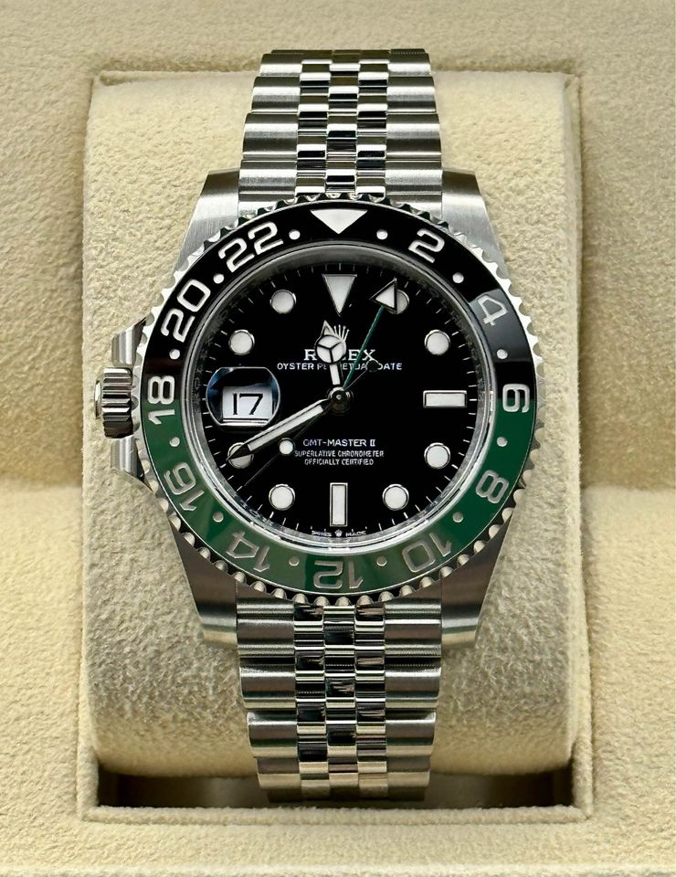

Rolex GMT Master II Sprite
W dzisiejszych czasach luksusowe zegarki są symbolem prestiżu, wyrafinowania i elegancji. Przez dekady zegarki te stały się ikonami jakości i niezawodności. Jednym z takich oszałamiających czasomierzy jest Rolex GMT Master II Sprite, który łączy nie tylko prestiż i elegancję, ale także pasję do podróży oraz kunszt rzemieślniczy. W tym wpisie na blogu przyjrzymy się bliżej temu zegarkowi, jego historii, unikalnym funkcjom oraz jego wpływowi na świat zegarków.

Początki GMT Master:
Aby zrozumieć, dlaczego Rolex GMT Master II Sprite jest tak wyjątkowy, warto zacząć od historii rodziny GMT Master. Linia ta została wprowadzona w 1955 roku jako odpowiedź na rosnące zapotrzebowanie na zegarki zdolne do śledzenia czasu w różnych strefach czasowych. Pierwszym modelem był GMT Master Reference 6542, który został opracowany we współpracy z Pan American World Airways, znaną również jako Pan Am. Linie lotnicze te potrzebowały precyzyjnego zegarka dla swoich pilotów, którzy podróżowali na różne kontynenty.
Od GMT Master do GMT Master II:
W 1983 roku, Rolex wprowadził na rynek kolejną generację GMT Master, znaną jako GMT Master II. Najważniejszą różnicą pomiędzy pierwszym GMT Master a GMT Master II jest niezależna regulacja wskazówki godzinowej, co pozwala na łatwiejsze ustawianie lokalnego czasu podczas podróży. Kolejnym istotnym ulepszeniem było wprowadzenie nowego ruchu, kaliber 3085, który umożliwiał obsługę drugiej strefy czasowej.
Kolorowe kombinacje GMT Master II:
Jednym z najbardziej rozpoznawalnych elementów linii GMT Master II są jego kolorowe, dwutonowe ramki. Pierwszy model z 1955 roku miał niebiesko-czerwoną ramkę, która zdobyła sobie przydomek "Pepsi" ze względu na podobieństwo do logo firmy. W kolejnych latach pojawiły się inne kombinacje kolorów, takie jak czarno-czerwona "Coca-Cola" oraz czarno-niebieska "Batman". Te kolorowe ramki były nie tylko stylowe, ale także praktyczne, ułatwiając odczytywanie czasu w drugiej strefie czasowej.
Narodziny Rolex GMT Master II Sprite:
Rolex kontynuował tradycję wprowadzania nowych, świeżych kolorów ramki, czego wynikiem jest model GMT Master II Sprite. Ten zegarek, który zadebiutował w 2021 roku, zyskał na popularności dzięki swojej niezwykłej kombinacji kolorystycznej – zielono-żółtej ramce, której wygląd przypomina popularne napoje gazowane, stąd nazwa "Sprite". Przełamując konwencje, Rolex zdecydował się na tę odważną i żywą kolorystykę, która sprawia, że zegarek wyróżnia się na tle innych modeli GMT Master II.
Wyjątkowe cechy GMT Master II Sprite:
Rolex GMT Master II Sprite, oprócz swojej wyjątkowej ramki, ma wiele cech, które łączą go z innymi modelami z linii GMT Master II. Zegarek ten posiada 40 mm kopertę wykonaną z 904L stali nierdzewnej Oystersteel, która jest nie tylko wytrzymała, ale także odporna na korozję. Wyposażony jest również w samowindingowy mechanizm manufakturowy Rolex, kaliber 3285, który zapewnia doskonałą precyzję, niezawodność i rezerwę chodu do 70 godzin. Wodoszczelność GMT Master II Sprite wynosi 100 metrów, dzięki czemu można go nosić podczas pływania czy snorkelingu. Zegarek ten posiada również klasyczny, trójdzielny, płaski oyster-bransoletę ze stalowej łączącej się z kopertą za pomocą systemu Oysterlock, który zapewnia bezpieczeństwo i wygodę noszenia. Tarcza zegarka jest czarna, a indeksy godzinowe oraz wskazówki są pokryte powłoką luminescencyjną Chromalight, która emituje długotrwałe niebieskie światło, umożliwiając odczyt czasu w ciemności. Wskazówka GMT w kształcie strzałki jest również pokryta zieloną powłoką, która doskonale komponuje się z zielono-żółtą ramką.
Wpływ na rynek zegarków i kolekcjonerów:
Rolex GMT Master II Sprite zyskał dużą popularność wśród miłośników zegarków i kolekcjonerów na całym świecie. Odważna kolorystyka i wysoka jakość wykonania sprawiły, że zegarek ten jest pożądany zarówno przez nowych nabywców, jak i doświadczonych kolekcjonerów. Wartość GMT Master II Sprite rosła na rynku wtórnym, co świadczy o jego wartości inwestycyjnej.
Podsumowanie:
Rolex GMT Master II Sprite to unikatowy zegarek, który łączy w sobie elementy klasyczne z nowoczesnymi i oryginalnymi akcentami kolorystycznymi. Dzięki swoim zaawansowanym funkcjom, wysokiej jakości wykonania oraz niezwykłemu wyglądowi, zegarek ten z pewnością zasługuje na miano prawdziwej ikony w świecie luksusowych czasomierzy. Jego wyjątkowa zielono-żółta ramka sprawia, że wyróżnia się na tle innych modeli, jednocześnie zachowując niezawodność i precyzję, za które Rolex jest znany. Dla osób, które cenią zarówno funkcjonalność, jak i styl, GMT Master II Sprite jest doskonałym wyborem. Ten zegarek może być doskonałym partnerem w podróży, oferując możliwość śledzenia czasu w dwóch strefach czasowych jednocześnie, a także będąc eleganckim dodatkiem do każdej garderoby. W dzisiejszym świecie, gdzie podróże międzykontynentalne są coraz częstsze, a rynek luksusowych zegarków jest nasycony różnorodnymi opcjami, Rolex GMT Master II Sprite wyróżnia się jako wyjątkowy czasomierz, który zaspokaja potrzeby zarówno podróżnych, jak i miłośników zegarków. Ciesząc się uznaniem kolekcjonerów i entuzjastów zegarków na całym świecie, Rolex GMT Master II Sprite dowodzi, że innowacyjne podejście do kolorystyki i designu może przynieść sukces w świecie luksusowych czasomierzy. Ten zegarek to hołd dla bogatej historii GMT Master oraz dowód na to, że wartość marki Rolex nie maleje, ale wręcz przeciwnie – kontynuuje swoją tradycję jakość i niezawodności, jednocześnie zachwycając nowymi i świeżymi pomysłami. W rezultacie, Rolex GMT Master II Sprite stanowi znakomity przykład tego, jak połączenie klasycznych elementów z nowoczesnymi pomysłami może zrewolucjonizować rynek luksusowych zegarków. Dla miłośników zegarków, którzy pragną posiadać unikalne, funkcjonalne i stylowe czasomierze, ten zegarek jest prawdziwym marzeniem. Współczesne trendy w modzie i designie coraz częściej odchodzą od tradycyjnych koncepcji, a oryginalność staje się kluczowym elementem. W tej sytuacji, warto docenić, jak Rolex odważnie wprowadza nowe kolorystyczne kombinacje, które przyciągają uwagę i potwierdzają status marki jako lidera w świecie luksusowych zegarków. Zegarek Rolex GMT Master II Sprite to doskonałe dopełnienie każdej kolekcji zegarków, a jego wartość inwestycyjna sprawia, że jest to świetny wybór nie tylko dla miłośników zegarków, ale także dla tych, którzy szukają trwałych i wartościowych inwestycji. Bez wątpienia, ten zegarek zostanie zapamiętany jako jedna z najbardziej fascynujących kreacji marki Rolex, łączącej w sobie tradycję, innowacje i kunszt rzemieślniczy w jednym niezwykłym czasomierzu.